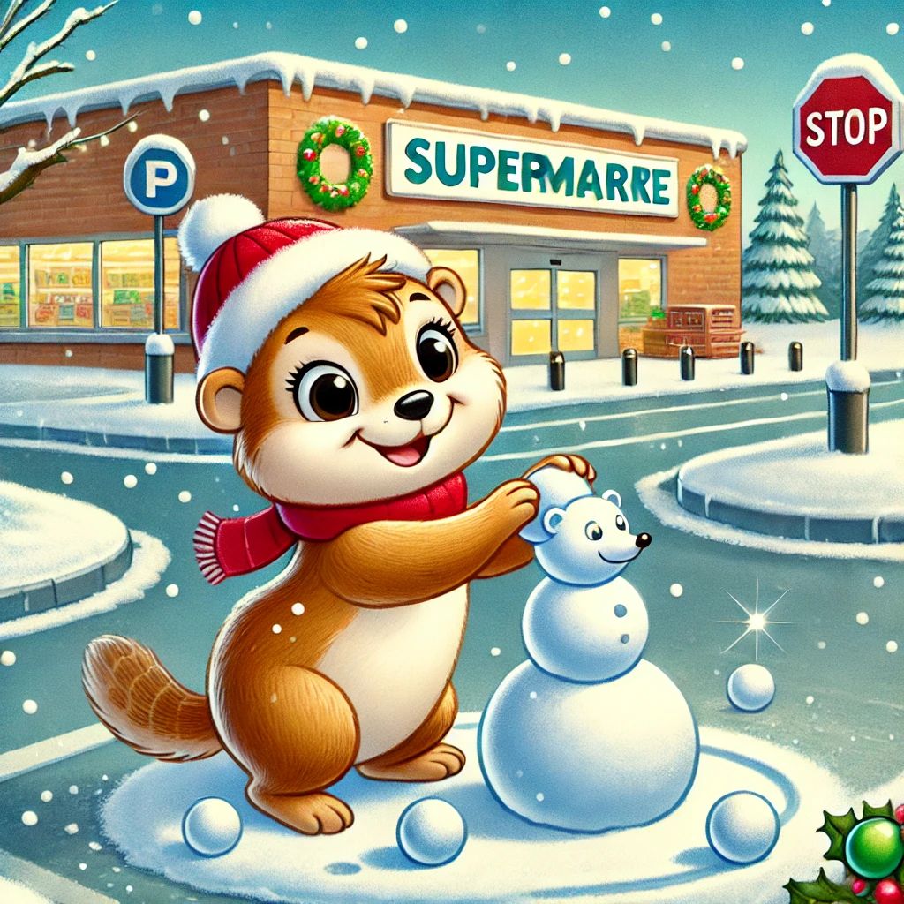
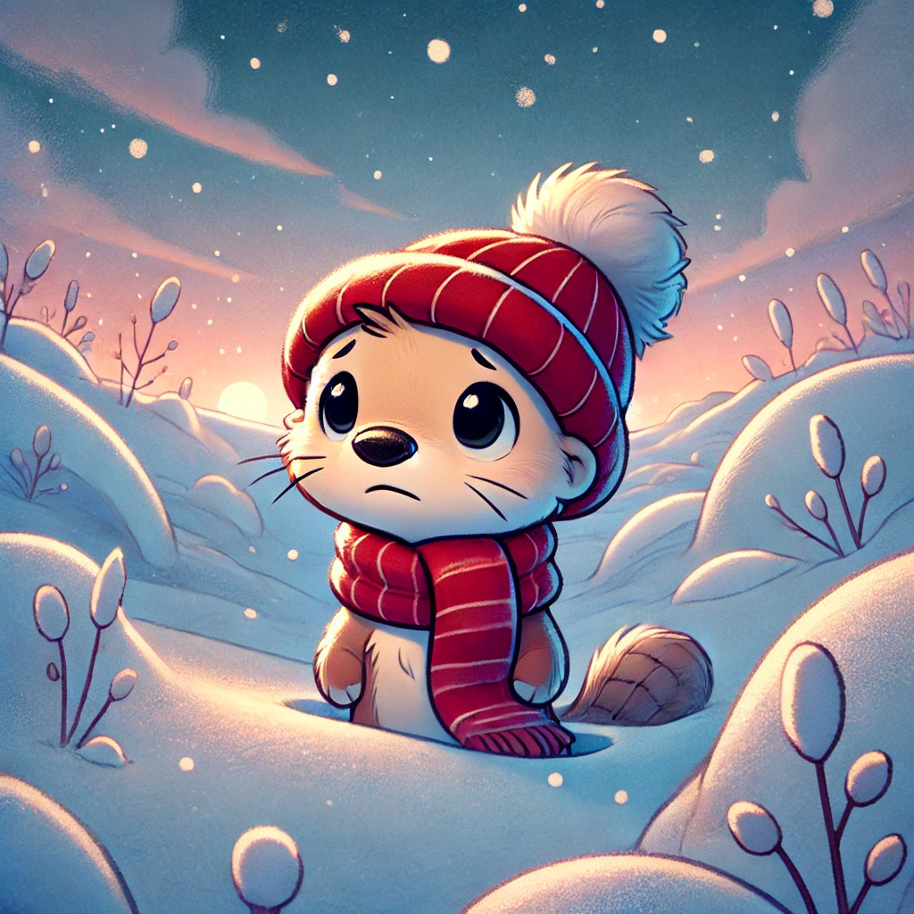
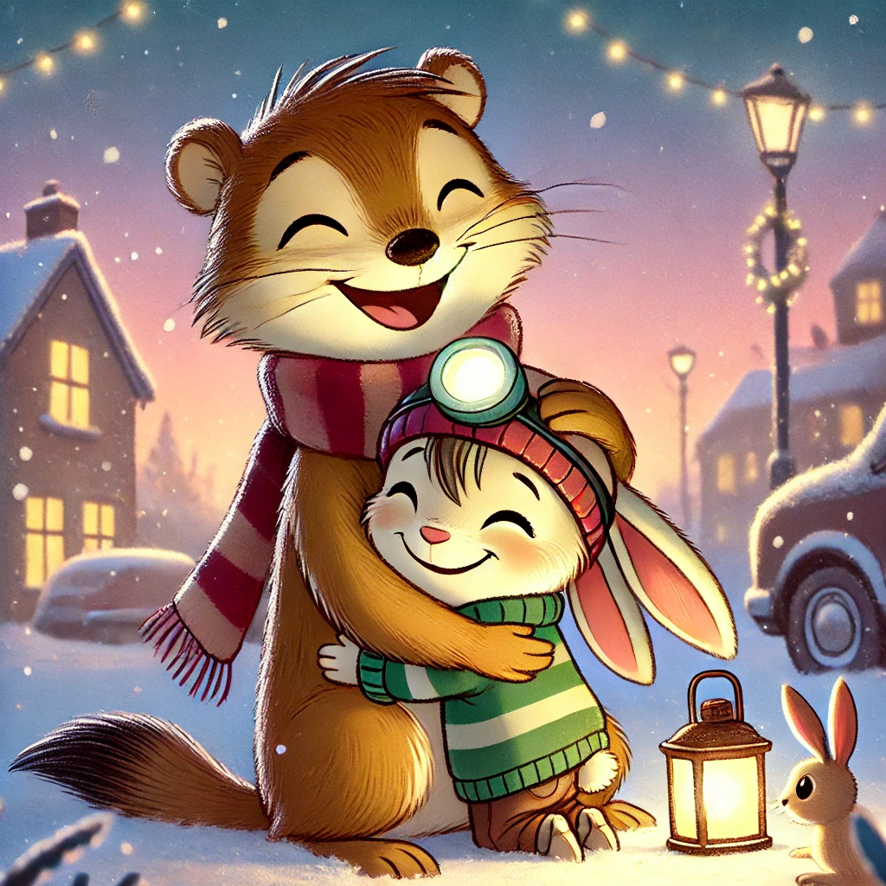

Es war einmal ein Wiesel namens Winnie, das oben auf dem Knabbereienregal eines Supermarkts in Leknes auf den Lofoten wohnte. Es war in der Adventszeit. Draußen lag eine gigantische Schicht Schnee. Der Parkplatz des Supermarkets hatte sich in einen riesigen Abenteuerspielplatz verwandelt.
So sehr Winnie Sport verabscheute - diese Art von Bewegung zog sie magisch an. So zog sie sich ihre kleine rote Mütze über und rannte in Richtung weißem Spaß.
Sie tobte und rollte im Schnee. Die Kälte störte Winnie nicht. Sie war viel zu sehr darin vertieft, einzelne Flocken in ihrem Mund schmelzen zu lassen - oh, wenn es Schnee nur mit Chipsgeschmack gäbe - und kleine Kugeln zu rollen, die sie dann den Hang hinunter schupste und zusah, wie sie immer größer wurden.
uch, ein Schneewiesel zu bauen, glückten nicht ganz: der Schwanz wollte und wollte nicht kleben bleiben. Bevor Winnie zurück in den warmen Supermarkt wollte, grub sie einen Tunnel, in dem sie durch einen hoch aufgeräumten Berg Schnee kriechen könnte. Was für einen Spaß sie hatte.Es begann zu dämmern und Winnie beschloss, dass es Zeit für den mach Hause weg war. Aber - oh nein - es hatte angefangen zu schneien und Winnie konnte in der Dämmerung und ohne ihre Fußspuren den Weg zurück nicht sehen. Ängstlich schaute sie sich um und war gerade dabei, in Panik zu verfallen, als sie leise Stimmen hörte: "Winnie? Wiiiiinnie, wo bist du?!" Winnie erkannte die Stimmen von Biep und Herrn Hase, die schnell näherkamen. Mit dankbarer Erleichterung rannte sie ihnen entgegen und rollte sie letzten Meter durch den Schnee, weil ihre Hinterbeinchen schneller waren als vorne.
Winnies Vers
"Wir haben dich zum Abendessen erwartet. Wir wussten, zum Essen würdest du nie und nimmer zu spät kommen, wenn dir nichts zugestoßen wäre. Herr Hase hier kann super gut sehen im Schnee und im Halbdunkel und er hat deine Fußspuren im Schnee entdeckt!" Biep zeigte auf Herrn Hase, der bescheiden neben ihm stand. Winnie fiel beiden um den Hals. Was würde sie ohne ihre Freunde machen!?